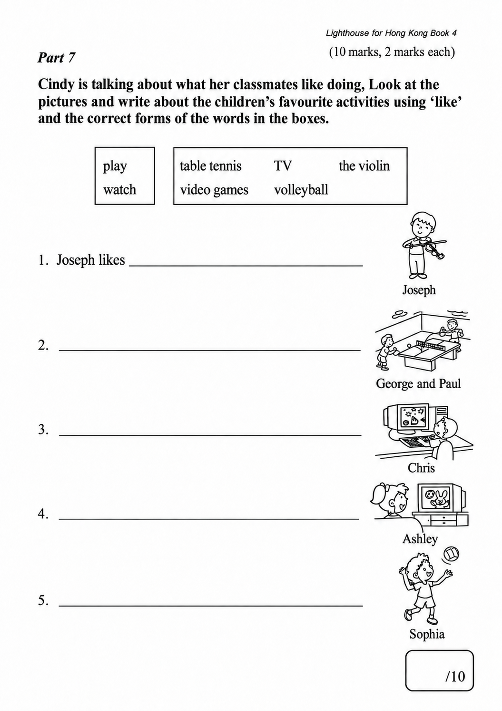
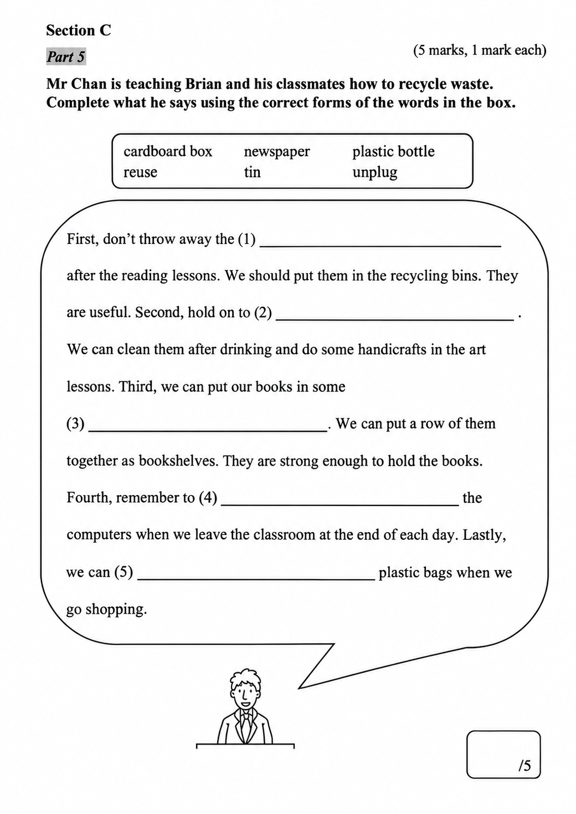
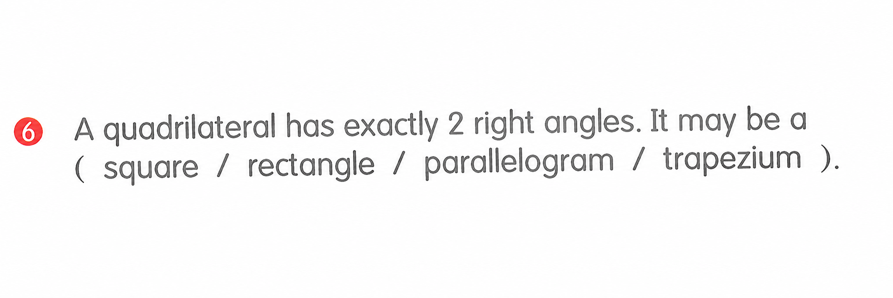

已掌握
| # | 中文意思 | 例句/提示 | 英文默写 | 已掌握 |
|---|---|---|---|---|
| noun 名词 | ||||
| 1 | 朋友 | My is kind. | ||
| 2 | 网站 | The school has news. | ||
| 3 | 尾巴 | The dog wags its . | ||
| 4 | 制服 | He wears a school . | ||
| 5 | 小学生 | The reads a book. | ||
| 6 | 飞机 | We travelled to Japan by . | ||
| 7 | 诊所 | I went to the for a check-up. | ||
| 8 | 司机 | The bus stopped at the crossing. | ||
| 9 | 铁路 | The connects the two towns. | ||
| verb 动词 | ||||
| 10 | 花费 | I one hour reading. | ||
| 11 | 洗澡 | I before bed. | ||
| 12 | 理解 | I the question. | ||
| 13 | 学习 | We new words every day. | ||
| 14 | 遮盖 | Please the bowl with a lid. | ||
| preposition 介词 | ||||
| 15 | 在……之上 | The clock is the board. | ||
| phrase 短语 | ||||
| 16 | 在……和……之间 | The park is the bank the school. | ||
| 17 | 校车 | We take the every morning. | ||
| adjective 形容词 | ||||
| 18 | 小的 | There is a flower in the grass. | ||
| 19 | 爱干净的 | My brother is and always puts his toys away. | ||
| verb/noun 动词/名词 | ||||
| 20 | 旅行 | We during the holiday. | ||
| # | 单词/词组 | 中文意思 | 例句/说明 | 已掌握 |
|---|---|---|---|---|
| noun 名词 | ||||
| 1 | leaflet | This leaflet tells us about the school fair. | ||
| 2 | example | This is an example. | ||
| 3 | goldfish | The goldfish swims in the bowl. | ||
| 4 | leader | The leader helps the group. | ||
| 5 | choir | My sister sings in the school choir. | ||
| 6 | title | Please write a title for the story. | ||
| 7 | assessment | We have a maths assessment on Friday. | ||
| 8 | phrases | These phrases are easy to remember. | ||
| 9 | chapter | This chapter is about animals. | ||
| 10 | chemical | The science teacher keeps the chemicals in a locked cupboard. | ||
| noun phrase 名词短语 | ||||
| 11 | contents page | The contents page lists the chapters in the book. | ||
| 12 | police dog | The police dog is clever. | ||
| 13 | a cup of hot chocolate | I'd like a cup of hot chocolate. | ||
| 14 | coffee table | The cups are on the coffee table. | ||
| 15 | chicken wings | We bought a box of chicken wings for dinner. | ||
| 16 | paper animals | She likes making paper animals. | ||
| verb 动词 | ||||
| 17 | circle | Please circle the correct answer. | ||
| 18 | revise | I revise for my English test after school. | ||
| 19 | dry | I dry my dog with a towel after his bath. | ||
| 20 | process | Dairy factories process milk before it is sold. | ||
| 21 | sweep | The animals like to play with me when I sweep the floor. | ||
| 22 | decorate | I like to decorate the Christmas tree with my sister at night. | ||
| phrase 短语 | ||||
| 23 | red packet | Grandma gave me a red packet at Chinese New Year. | ||
| verb phrase 动词短语 | ||||
| 24 | play the piano | I want to play the piano every day. | ||
| 25 | playing card games | She likes playing card games. | ||
| 26 | play with lanterns | We play with lanterns at night. | ||
| adjective phrase 形容词短语 | ||||
| 27 | end-of-year | We are getting ready for the end-of-year exam. | ||
| conjunction 连词 | ||||
| 28 | but | Benny is small but he eats a lot. | ||
| interrogative pronoun 疑问代词 | ||||
| 29 | what | What do you do on your birthday? | ||
| adverbial phrase 副词短语 | ||||
| 30 | per day | Our dog goes for two walks per day. | ||
| # | 中文意思 | 例句/提示 | 英文默写 | 已掌握 |
|---|---|---|---|---|
| time/date 时间日期 | ||||
| 1 | 三月 | is the third month. | ||
| 2 | 十一月 | is the eleventh month. | ||
| 3 | 星期一 | is a weekday. | ||
| time unit 时间单位 | ||||
| 4 | 月 | A has many days. | ||
| directions 方向 | ||||
| 5 | 东 | The sun rises in the . | ||
| 6 | 南 | is a direction. | ||
| numbers 数字 | ||||
| 7 | 1 | is 1. | ||
| 8 | 14 | is 14. | ||
| 9 | 18 | is 18. | ||
| 10 | 20 | is 20. | ||
| 11 | 80 | is 80. | ||
| solid shape 立体图形 | ||||
| 12 | 三棱柱 | A has triangular faces. | ||
| plane shape 平面图形 | ||||
| 13 | 四边形 | A has four sides. | ||
| 14 | 五边形 | A has five sides. | ||
| 15 | 六边形 | A has six sides. | ||
| # | 单词/词组 | 中文意思 | 例句/说明 | 已掌握 |
|---|---|---|---|---|
| operations 运算 | ||||
| 1 | be left | How many apples will be left? | ||
| geometry 几何 | ||||
| 2 | angle | An angle is formed by two rays with the same endpoint. | ||
| 3 | perpendicular line | Perpendicular lines meet at a right angle. | ||
| 4 | obtuse angle | An obtuse angle is greater than 90 degrees and less than 180 degrees. | ||
| 5 | opposite side | In a rectangle, the opposite sides are equal. | ||
| question word 题目词 | ||||
| 6 | estimate | Estimate the answer first. | ||
| 7 | respectively | Tom and Ben have 2 and 3 books respectively. | ||
| answer 答案 | ||||
| 8 | answer | Write the answer in the box. | ||
| 9 | correct | Choose the correct answer. | ||
| place value 位值 | ||||
| 10 | tens | The digit is in the tens place. | ||
| 11 | units | The digit is in the units place. | ||
| comparison 比较 | ||||
| 12 | least | Which number is the least? | ||
| time/date 时间日期 | ||||
| 13 | minute hand | At three o'clock, the minute hand points to 12. | ||
| 14 | midnight | Midnight is twelve o'clock at night. | ||
| position 位置 | ||||
| 15 | back | The desk is at the back of the room. | ||
| 16 | arrow | The arrow points to the right. | ||
| operations calculation 运算 | ||||
| 17 | product | The product is the answer in multiplication. | ||
| teacher math vocabulary 老师数学词汇 | ||||
| 18 | each | Each child has three pencils. | ||
| currency money 货币 | ||||
| 19 | cent | One cent is a small amount of money. | ||
| 20 | change | Count the change after paying. | ||
| measurement 测量 | ||||
| 21 | fill | Fill the jug with water. | ||
| 22 | ruler | Use a ruler to measure the length of the line segment. | ||
| 23 | measure | We measure the length with a ruler. | ||
| 24 | width | The rectangle has a length of 8 cm and a width of 5 cm. | ||
| data charts 统计图 | ||||
| 25 | pictogram | Read the pictogram. | ||
| 句型结构 | ||||
| 26 | Angle ... is smaller than Angle ... | Angle A is smaller than Angle B. | ||
| 27 | Angle ... is the smallest. | Angle B is the smallest. | ||
| 28 | ... is to the east of ... | The school is to the east of the park. | ||
| plane shape 平面图形 | ||||
| 29 | lower base | The lower base of this trapezium is 7 cm long. | ||
| 30 | right-angled trapezium | A right-angled trapezium has two right angles. | ||


